Shoutouts
Congrats to “The Writer” for finishing the latest chapter of his book! As I promised down below I said I would give him a shoutout for doing so and here we are. Love the consistency!!
Congrats to “The Slosher” for running her fastest half marathon yet!!
Monday
In the middle of karmelizing the kernels I got lunch with “The Shadow Brigade” over at Tacqueria El Buen Sabor. She continued a favorite tradition of mine where she read last week's newsletter in real time which always tickles me.
After the kernels were forged I went to go see You Can See Everything with “The Sparkle,” “Mirandom thoughts,” and for the last time in a while “The Quant”. The movie itself was a trip. The non spoiler tldr is that Nathan Fielder is documenting Elizabeth Holmes for 30 days before she is set to go to prison. It was certainly engaging (for the most part), but I’m not really sure what I was supposed to take way from it. It felt kinda like a story with no point, and I’m left wondering how much was scripted vs not. There was a part of the movie where I fell asleep in the first half but I think that was only 30 minutes or so. The second half proved to be a lot more engaging and if I’m being honest I think the drama with Holmes’ husband Billy Evans was more engaging than the stuff with Holmes herself. On the whole I would call the movie good if somewhat overhyped.
I don’t think it really needed to be 3 hours and I realized that I’m not really built for a 3 hour movie without leaving part way through. I think that’s the longest I’ve had to sit and stay still and I succeeded at it to a questionable degree. I played with the recliner a few times and twirled my glasses which I was told was a bit distracting. Oops sorry about that :(.
As we were leaving the theater “Mirandom thoughts” hit me with “Your best friend is now leaving” and that’s when it really hit me. I know he’ll be back in January but this is when our dynamic shifts from him being a regular friend I can see whenever to a visitor. I think his January visit will be more like when “The Professor” came to town in May. I’ll be happy to see him of course but damn. You really are one of my closest friends and I’m going to greatly miss ya and cherish our time together. Best of luck man, I know you’ll kick a bunch of Hong Kong ass and rule the Chinese exchange markets in no time.
I gave him a hoist in the air like “The Philosopher” would do with “The Juggler” and headed on my way.
Tuesday
Once I cut up the code I went to Shotwells trivia with “Let me give you a call on the world's smallest phone”. This trivia was broken into 6 rounds: 2 rounds of general knowledge, one round where we had to write all ten states that are only in the central time zone, a round where we had to name a bunch of faces, a same same different round, and a general knowledge round.
A same same different round is essentially a round where you are given two clues and have to find what satisfied them. One example was “assassinated president and car brand” with the answer being Lincoln.
The general knowledge rounds were pretty reasonable. Between me and “Let me give you a call on the world's smallest phone” we did pretty well at those. We didn’t do perfectly but we held our own. Unfortunately the round where we had to name faces wrecked us. There were 10 faces and we went zero for ten. I figured that since we knew none of them I may as well have some fun and come up with some funny names because why not. Heres the photo with all the faces, I encourage you all to try and see how many you can get
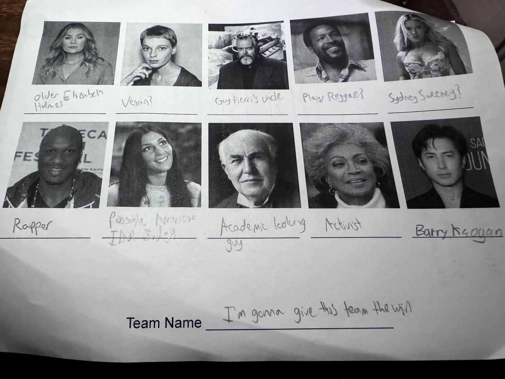
I sent a photo of this to "The Fisherwoman” and she identified the bottom right guy as being in Heated Rivalry.
After all was said and done we got second to last place, narrowly edging out last place by two points!
One somewhat annoying thing about the trivia was the fact it was done on pencil and paper vs electronically. It took the host a while to grade all them which I do definitely respect and appreciate, but we got into a cadence of doing two rounds, having a long grading break, and so on. It made me appreciate the trivia that “Let me give you a call on the worlds smallest phone” hosted where we could get through the same number of rounds in half the time.
We then got dinner at Tacqueria El Buen Sabor as our post trivia fuel. I hadn’t really hung out 1:1 with “Let me give you a call on the world’s smallest phone” until now so this was really nice!
Wednesday
Happy “The Shadow Brigade” day to all who have served! Yes yes I know “The Shadow Brigade” you are currently serving right now so technically you don’t count but you have completed a whole term of service so according to trash tales rules that means you count so there! If you wish to thank “The Shadow Brigade” let me know and I can do so on your behalf.
I celebrated my day off by going on a nice walk throughout the city. I started in Haight Ashbury and then I went to A Runners Mind over in Jordan Heights to get some new running shoes
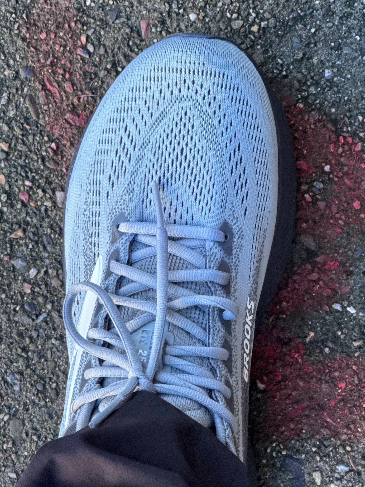
From there I went to Bernal Heights and really savored the view. Sometimes a nice walk on a day with great weather really is all I need and I felt an enormous sense of gratitude that I got to experience this. I walked around in South Mission afterwards and I forgot how nice that neighborhood is. It was quite charming.
From there I went to Divisadero and got a pound of brisket and some fries and wolfed it down. Then I went to Embarcadero and met up with “The Fisherwoman” and gave her her birthday gift. I got her a fighting style belt that said “Salmon Champion, Feminist Fisherwoman” on it combining her love of fishing with MMA. I also picked Salmon in honor of the Salmon charter she went on earlier in the summer which I believe was her first big charter.
As I was walking down the Embarcadero I was struck by one of the most beautiful crescent moons I had ever seen.
I ended my day with Midnight Runners with “This adds up”. I’ve known him for a while but never quite got around to making a nickname for him and here we are. I’ve gotten to know him more recently as he is a friend of “Happy national crocs day”. The pace of my run was solid at 7:37 per mile but the aforementioned pound of brisket and fries I ate did take their toll. I thought 2.5 hours would be enough time for it to digest but sadly I did start to feel it in my stomach. Nothing bad happened as I quit before then but I was bummed; I felt really in the zone running wise and this was the first time I had run after a 20 mile walk but I guess 2.14 miles after a 20 mile walk is still definitely a red letter day indeed.
The time alone with my thoughts helped me come to the conclusion that I think I need to take a step back from seeking out and trying to implement a bunch of diverse dating advice from so many folks. I’m quite grateful to all my friends who have given me a lot of advice but I think I need to take a step back and figure out how I want to integrate it and figure out my own path forward for a bit, and I do admit sometimes getting so much advice can be a bit draining. I still have some individual things I want to do such as my gym goals which are largely independent and my fashion stuff with “The Yogi” but beyond that I think I’ll take a breather on it for now. I will admit also that spending so much time examining all my flaws hasn’t always been the best and while I do think it largely has been helpful it’s come with some costs that I want to step away from for the time being.
I think my strategy for now will be to integrate some of the advice I’ve already gotten on my own terms and continue to just live my life in a way that is enjoyable. Don’t get me wrong I definitely am looking for a partner but I’m also very grateful for my life as it is and I really enjoy so many things about it. I say this more because I worry I may complain a lot when objectively I have an incredibly great life. I have to resist the urge to gush about a lot of things more because the two year special is coming up with a time and place for that.
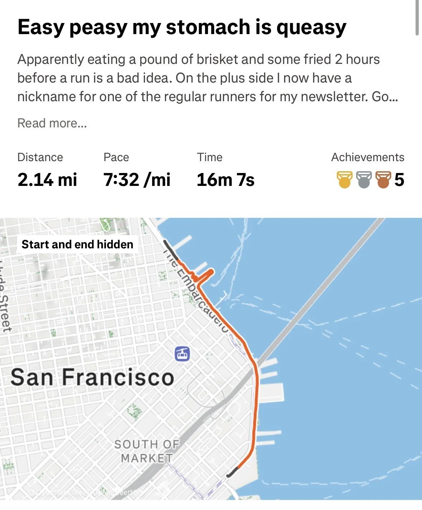
Thursday
After the tokens were tenderized I went to a comedy show called Cheaper than Therapy with “The Juggler,” “The Philosopher,” and “The Mosher”. The show was pretty good overall. They were six comedians; three of whom I really liked, two of whom I I thought were alright, and one who stood out because while I didn’t care for the jokes I respected his energy and the fact that he clearly seemed to be having a good time. I think I see some of myself in that.
One of the guys was a Muslim (from Pakistan I think), he had a really good joke “It was tough being raised by a single mom, especially with my Dad around”.
There was a woman who made a funny joke about galloping home at night so that people would think she’s mentally unstable and stay away from her which made me wonder how many of my own affectations have that kind of affect.
I solidly enjoyed the show overall but unfortunately I do think I liked it the least of my friends which was a bit of a bummer.
After the show we wandered around for a while and found some construction scaffolding which "The Philosopher” challenged me to do a pull up on. While I’m continuing to make progress at the gym I can still barely eke out a single one. I have quite a bit of ways to go to reach my fitness goals as compared to my friends I’m still quite out of shape. That being said I have been making progress so perhaps it’s not out of trach to fetch up to them.
Eventually we settled on this one bar with a jazz performance and dancing at the front. Surprisingly nobody but us actually tried dancing so we pretty much took over the dance floor at this bar. “The Juggler” was teaching me and “The Philosopher” some acro yoga moves and an interesting partner footage called the rain dance where you touch both the front and back of your feet in coordination.
The highlight came though when they said there was a special birthday to celebrate, an 84 year old named Arlene. She came up and danced with us which was great. She had so much life and energy and we had some fun getting to know her. Apparently she lives in LA but she came here to celebrate her birthday with her friend which was super cool.
Afterwards we went to Yerba Buena Park to try to practice some acro moves for a bit before the security guard came and kicked us out since the park closed an hour and a half ago.
Friday
Once the prefill was puréed I met up with “The Enabler” for dinner. We went to a Thai BBQ place in inner Richmond called Muukata365 that was quite good! Unlike KBBQ they used a special kind of grill that could cook both meat and noodles. While I didn’t exercise the latter I have to say the meat was quite solid. The brisket I had there was some of the best I’ve had at a bbq place! The beef tongue and marinated beef was quite good as well.
As we caught up he told me about a 3 star Michelin restaurant he went to in Spain that had really bad food but a very unique experience which goes to show that Michelin Stars don’t always equate to quality. At one point this restaurant was called the best restaurant in the world which he said with an evidently strained expression remembering his own experience there.
He also asked me what some of the highlights of my year have been. I won’t give the answer now because I plan to do a much longer version as part of the two year anniversary special that will be coming out in a few weeks.
Saturday
My day started with a neighbor meet and greet at 4:50 AM that happened at the front of my building. I never really talk with my neighbors so this was the first time in a while I mingled with them. For whatever reason a lot of the conversations were about why the fire alarm went off. Sure I will admit that I was woken up suddenly with an incredibly loud noise that felt like hell itself was crashing into our mortal plane and a sense of urgency to get downstairs like a giant angry wombat was hurdling towards me, but I assume they really wanted to make sure we didn’t miss the mingling event.
I think the apartment building invited some firemen to the event and I tried to talk with them but they seemed more focused on skipping the socializing and going straight into the apartment for some reason. Maybe they were shy. They went about the apartment complex for a while and then told the apartment manager that it was a false alarm which is surprisingly common and there wasn’t actually a fire. Well of course, if there was actually a fire it would make it much harder to socialize. I’m not good with smoke so I think I’d be less loquacious than normal; I’m already only ½ a “The Fisherwoman”, and with smoke I dare say I would get to ⅛ territory.
Initially my plan after the meet and greet was to go plant trees with friends of the urban forest, unfortunately that fell through when they didn’t send the email they said they would tell me where to go. They said somewhere in Chinatown but that wasn’t very helpful.
I decided instead to do trash pickup with “Joyous laugh,” “Bleaching to the choir,” “The Notetaker,” “The Writer,” “Let me give you a call on the world's smallest phone,” “The Ravenkeeper,” “This American doll seller” and some others.
“The Writer” is trying to publish the latest chapter of his book today and at the time of this writing neither of us know if he will finish. To motivate him, I told him I would give him the most valuable currency I can, a shoutout at the top of the newsletter if he gets it done on time. You’ll know already if he has done it based on the Shoutouts section but I don’t and I’m excited for “The Writer” to pull it off.
While at the trash pickup I learned from a Hawaiian that it’s a common thing to want to build something and then dig to find bones leading people to think the build site may have been an ancient burial ground and then delay building to make sure the site is blessed. I had only heard of this as a TV trope so hearing that it actually happened was quite the surprise.
After the pickup, we went to the grand reopening of the Mission branch of the SF Public Library. It has been open for 110 years but closed down in 2020 for renovations which got extensively delayed, but the opening day was finally here. The event kicked off with a bunch of speeches from different people in library related branches of government. Thankfully I was able to understand their roles at a high level due to the SF government class I took. Admittedly we all zoned out during those. As I told everyone the speeches are one small step for us and one medium step for their careers. After the speeches they had a “blessing”. If you’re anything like me you’re probably wondering how you bless a library. Well dear reader, the answer is you do a big indigenous dance which was admittedly pretty interesting
They had a full team of these people with some incense going around dancing with what sounded like very indigenous music in the background. Also I realize I should clarify what I said above, the dancing was pretty interesting … for the first five minutes. The next 15 I admittedly got bored with. I’m not an expert in library blessing or anything but I do wonder how long the spirits have to be appeased for before they ok the library. If they cut it short by a couple minutes will they give more paper cuts? If they cut it short by 10 will an extra book be stolen? I’m not sure the rules here but I do know I was zoning out.
Thankfully the blessing did finish and I got to go inside and check it out. Never before had I seen a library so crowded, it felt like a concert. Any hopes of being able to shush people there were a lost cause today.
After checking out the library for a bit I headed off … to the Renegade fair. If you’re “The Quant,” “The Professor,” “The Plower,” or “The Taco” you may be quite surprised to hear that, even more surprised to hear that I decided to go there by myself. For some context the last time I went to this craft fair was in 2024 and I had to be dragged pretty much kicking and screaming because “The Plower” really wanted to go and “The Professor” was pretty interested as well. Back in those days I absolutely hated it and it felt like I was descending into a den of angry wombats that wanted to take out my liver and stomp on it with a really big pogo stick.
However, today was a bit different. I heard about the craft fair from the Hawaiian girl from trash pickup and I realized … I could get some wall art for my apartment. This hasn’t been a big part of my glow up focus but I thought it could be fun nonetheless to get some cool posters and the craft fair seems like it has the right balance of quirky and artisanal that I’m looking for. No sooner than I get there do I run into “Mr. Greenflag” who had a feeling he would run into someone he knew there; just in time too because he was just about to leave and was almost going to be wrong.
I found some interesting posters that I think meet what I’m looking for. I brought them home and after 30 long years I finally joined the exclusive club of people that buy command strips and use them to stick things to the wall. It’s an elite core that requires years of dedication, training, and being willing to throw down $12 at Cole Valley Hardware like I’m the next Jeff Bezos. Here’s how they all look
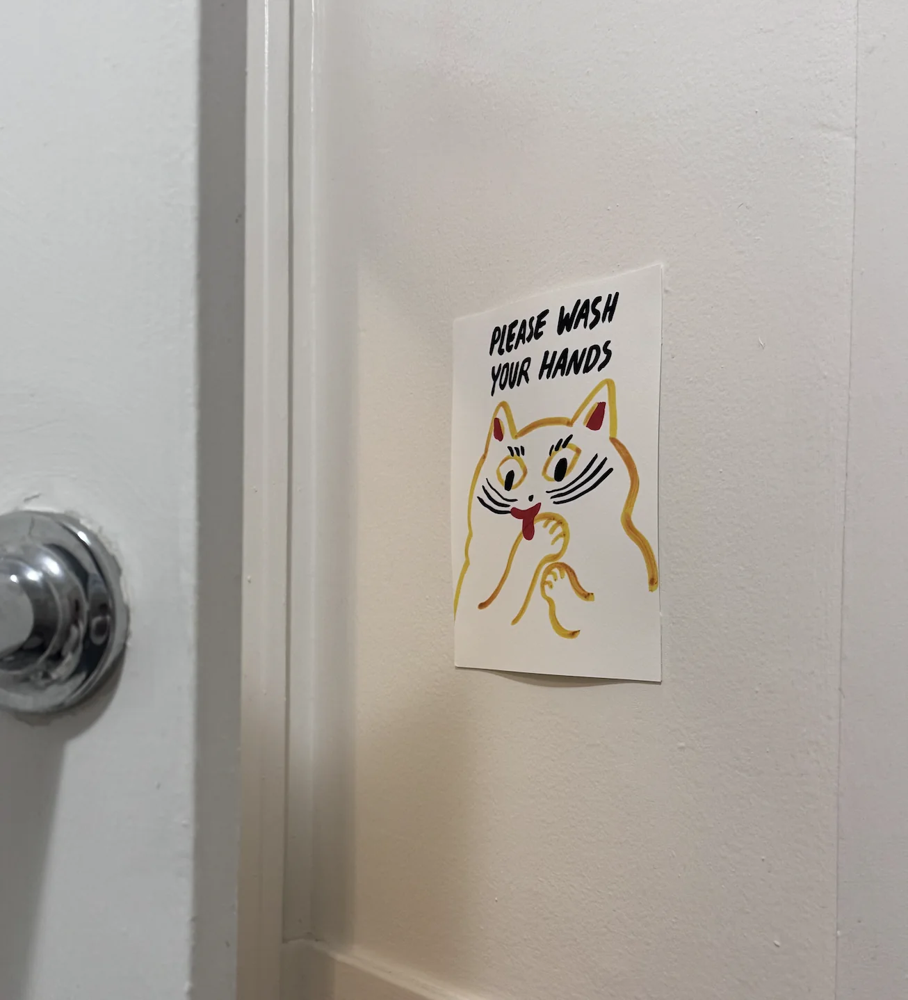
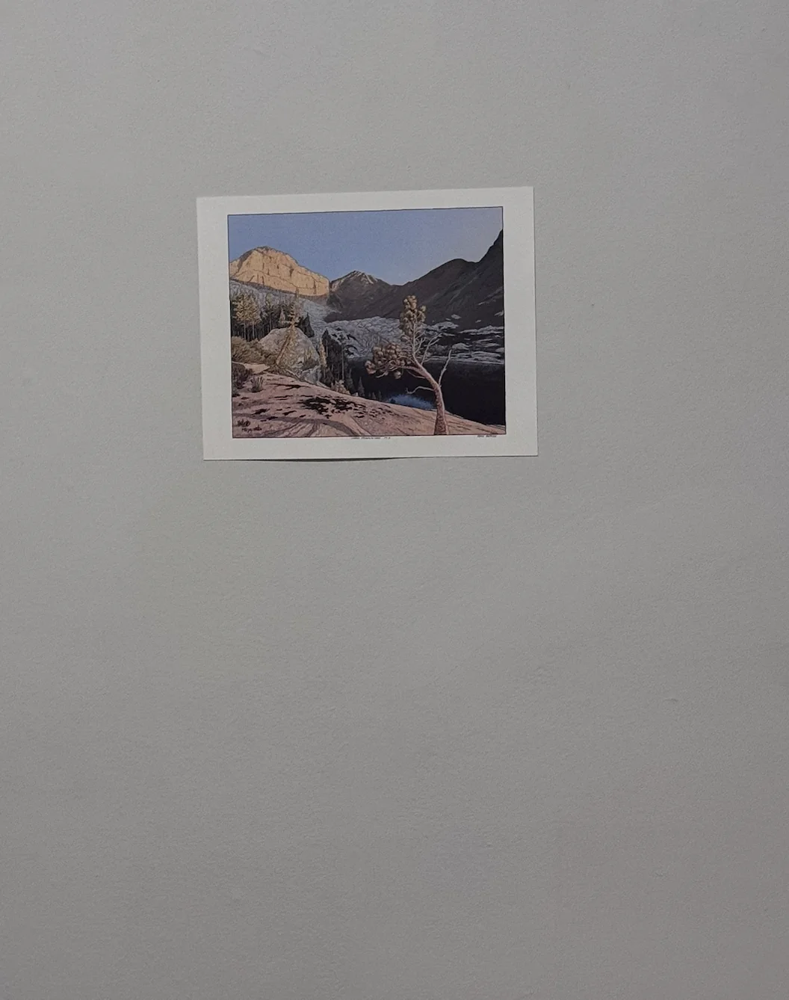
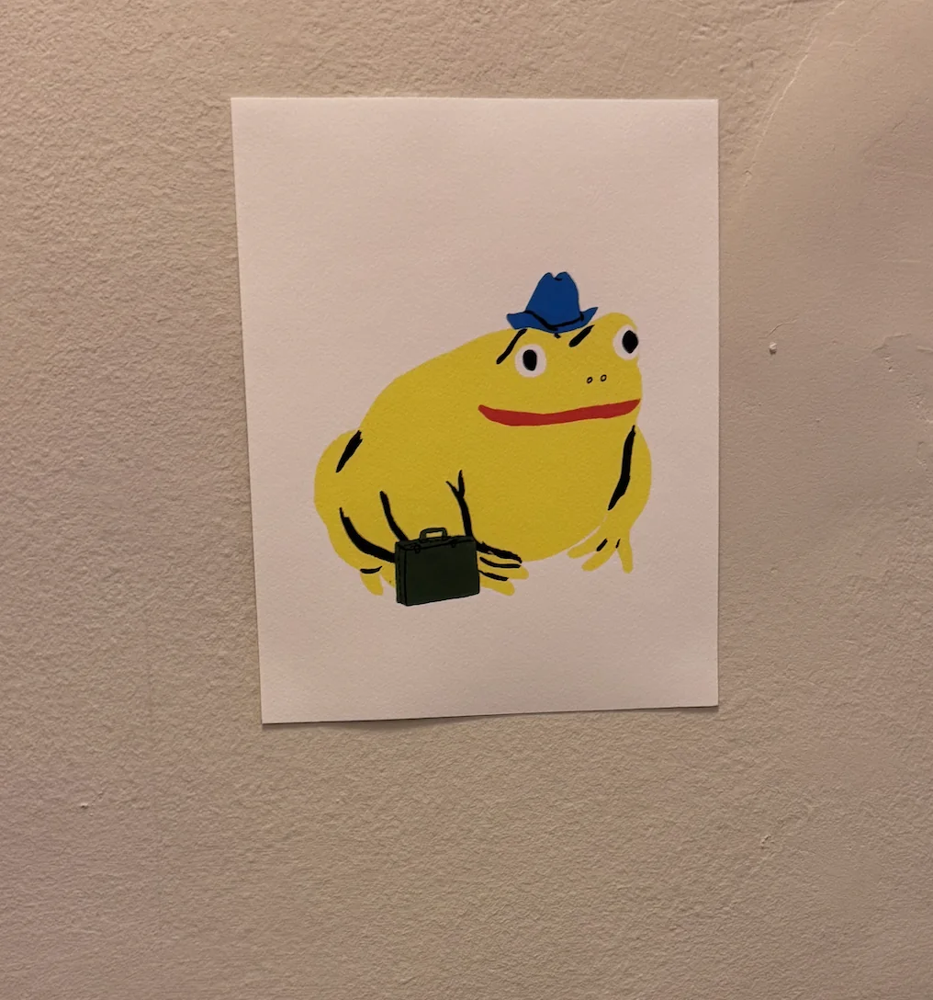
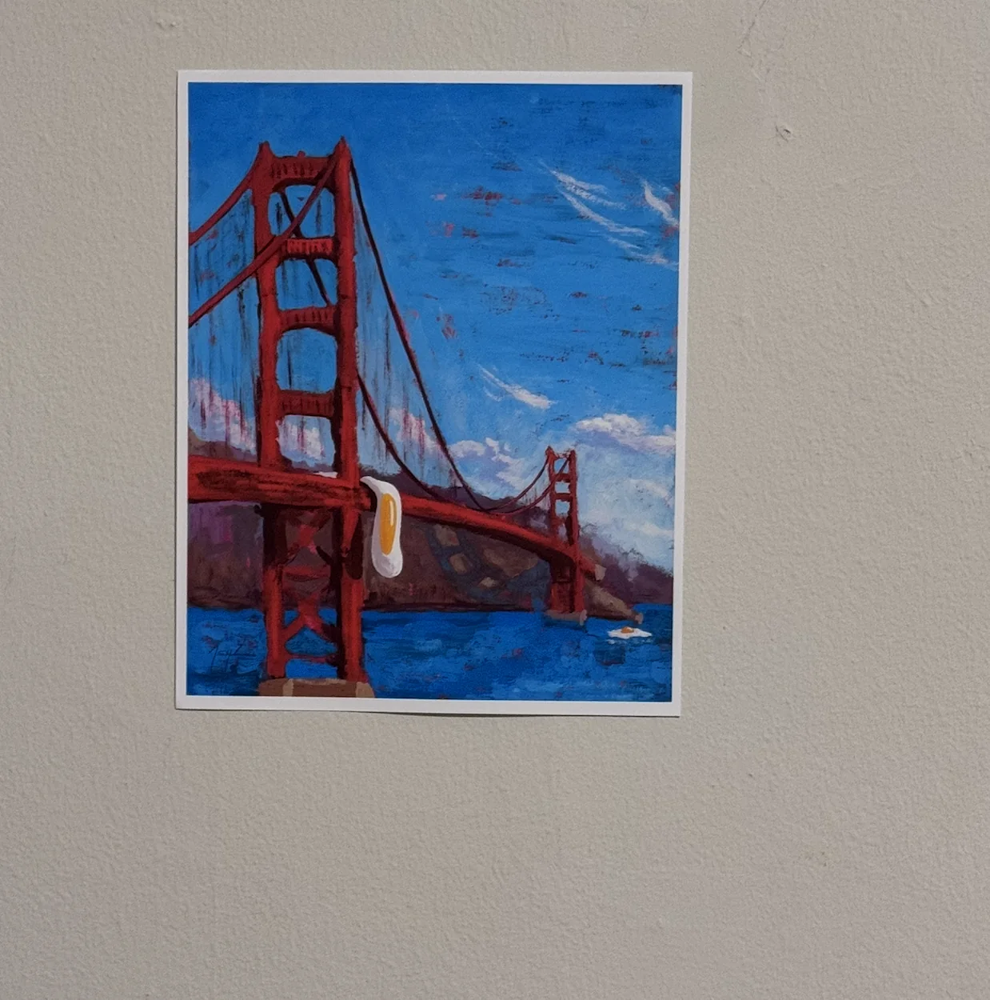
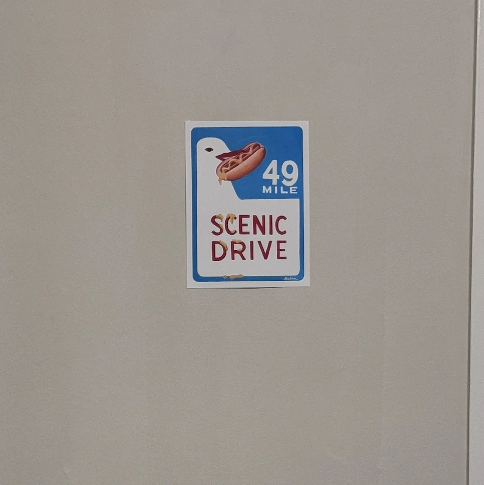
After 4 years I’ve finally taken steps towards decorating my apartment. If you asked me at the start of the day I never would have guessed this is where we ended up but here we are!
All of a sudden I get a call from “Hell Yeah” asking if I want to get dinner at H-Mart and I’m never one to resist a spontaneous call to adventure so we go there and I get some pretty solid fried rice. While at the shopping center “Hell Yeah” walks me through which Korean snacks are considered really good. There’s some pancake mix he used to have a lot as a kid that he quite enjoyed for example
When I get home I do a bit of juggling; unfortunately I still can’t do 3 balls at all. I may need to ask “The Juggler” for help or go to the drop in at Circus Center to try to figure it out. I also ask ChatGPT to help me put together a lesson plan for getting better at mental math. I think it would be a fun way to continue to keep my mind sharp and may be useful. I start with some tricks for doing 2 digit multiplication which I am getting better but not great at. For example I can do 32 * 82 without a calculator now and after about 30 seconds I was able to get the answer which isn’t great in terms of speed but it’s a starting point. The lesson plan ChatGPT built for me is first having me do things consistently before getting to speed.
Sunday
I bought a pumpkin pie for the Friendsgiving I will be going to later today and then headed to the Nob Hill trash pickup. So far I’m liking the group here. I’m definitely not as established as I am at the Mission pickups but some people now recognize me and a couple are looking forward to me doing standup soon.
While at the pickup I talked with a few people including a girl in a Costco hoodie I saw at the first pickup and some other people. One guy mentions that some people thought he was doing trash pickup because he was in trouble with the law. Of course, given that I couldn’t resist mentioning my old bit of responding to people thanking me with “Don’t thank me … thank the courts”. This in turn led to Costco hoodie girl jokingly saying I should change who I am when I go to trash pickup which led me to tell her about the time I pretended to be my own twin brother to try to fool “The Ravenkeeper”. At that point she said the next time I come to the Nob Hill trash pickup I should be a new person.
She didn’t know it but she threw down the gauntlet. ALRIGHT COSTCO HOODIE GIRL. WE’VE ONLY MET TWICE SO YOU HAVE NO DAMN IDEA ABOUT MY COMMITMENT TO THE BIT. I’LL DO EXACTLY THAT! I WILL DISGUISE MYSELF AND DO IT A HELL OF A LOT BETTER THAN LAST TIME. BRING IT ON!! Is it the most socially normative idea ever? Of course not. But screw it I gotta have some fun ya know. She threw me this challenge and I’ll damn accept it.
After the pickup I go to a cookie picnic where I feast more on the vibes than the actual cookies. I met some interesting people including one Pakistani guy that clocked me as Pakistani the second he saw me and wanted to connect right away on that. I really appreciate that and want to meet up with the guy.
From there I go to a Friendsgiving with “The Raja of Rhythm,” “The Yogi,” “Mr. Socksesful,” “John Wick” and some other people in that friend group. When I get there I take out the pumpkin pie from earlier only to see it got really beat up in transit. To make it a bit more palatable I give the pie a name and write a little note in front of it
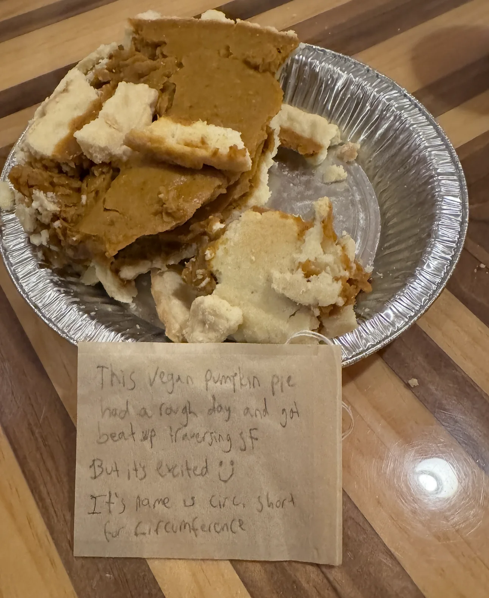
The dinner was great and I appreciated that there were a lot of dairy free options!!
At the dinner “John Wick” was filming a Friendsgiving video which involved him asking everyone what dish they brought. He did this last year and while I didn’t go to the Friendsgiving the video was really fun to watch so I’m really looking forward to this year!
Personal training progress for the week
The dot plots below show every exercise logged through 11/12/2026; later dates are excluded. The x-axis is time, the y-axis is logged weight, and dot size represents reps or logged time. Bodyweight sets appear on the BW baseline.
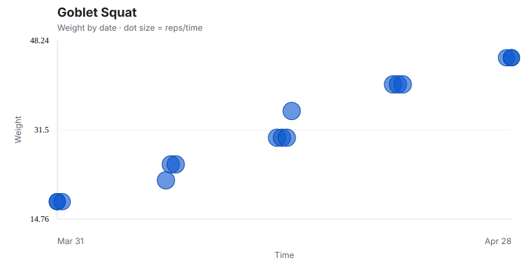


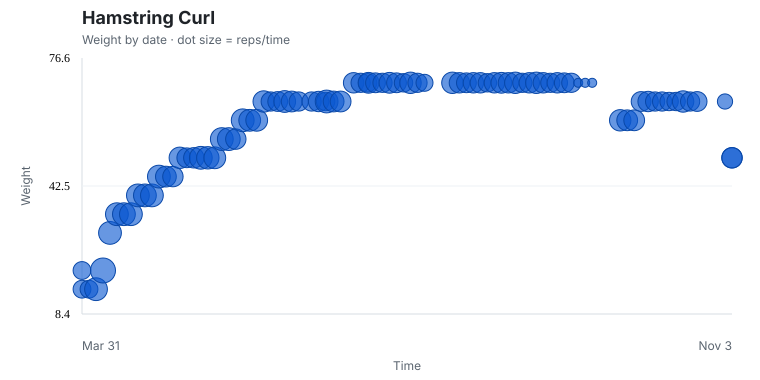

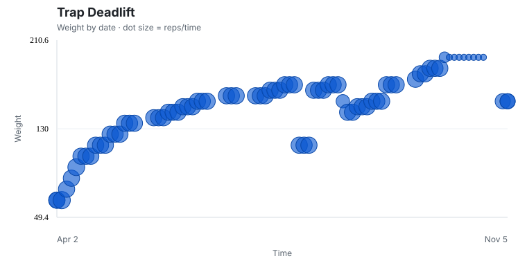
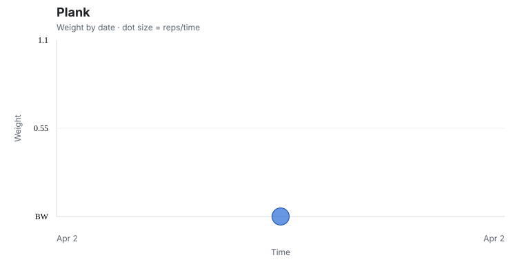

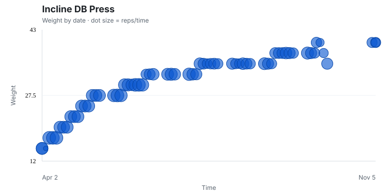
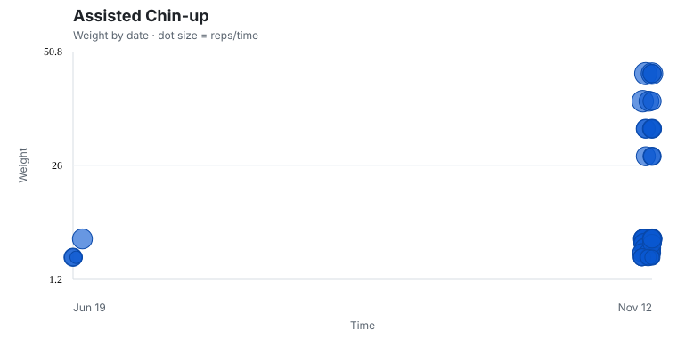

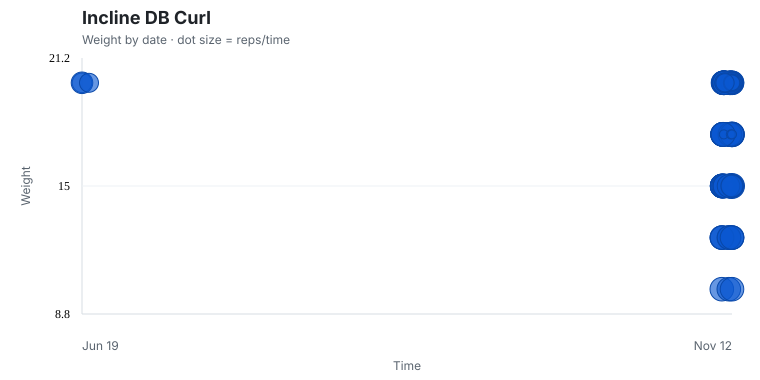
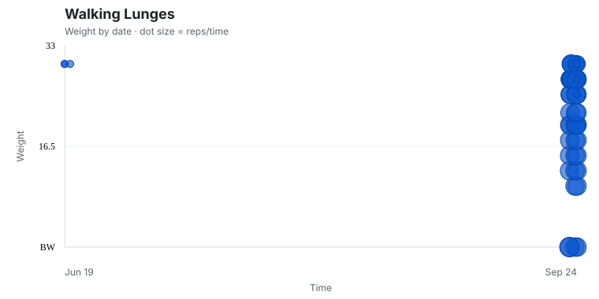

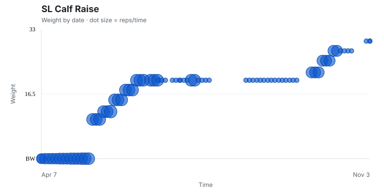
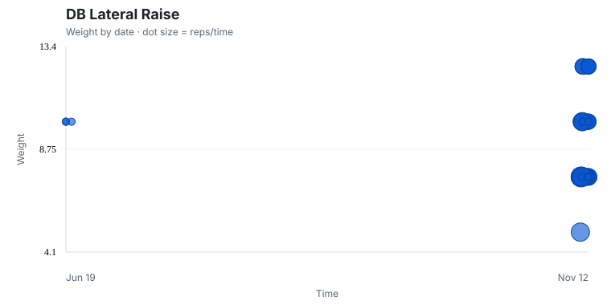


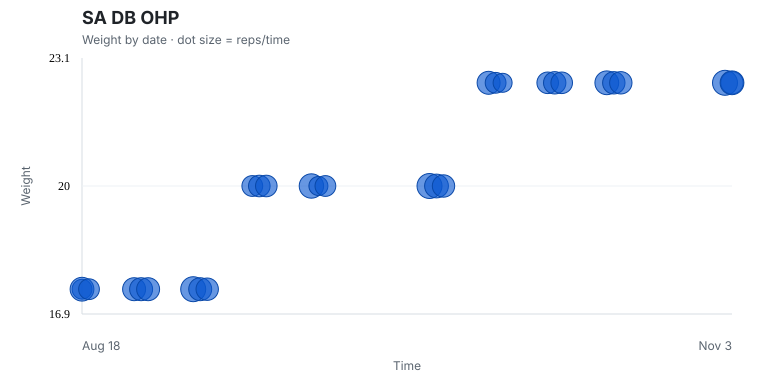


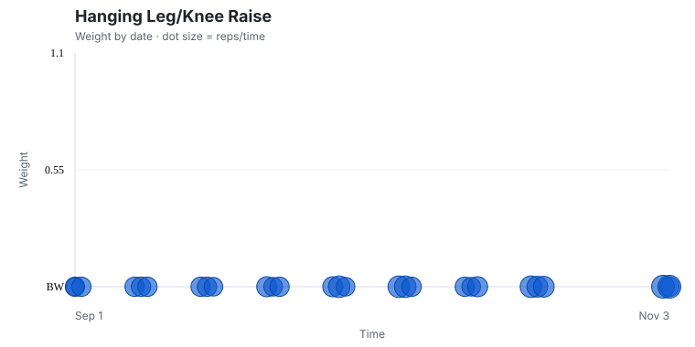
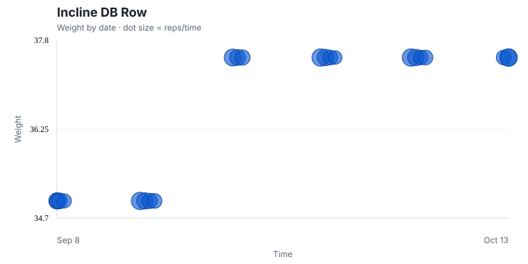

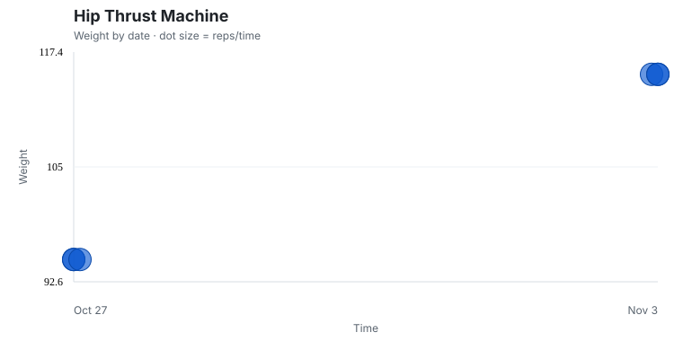